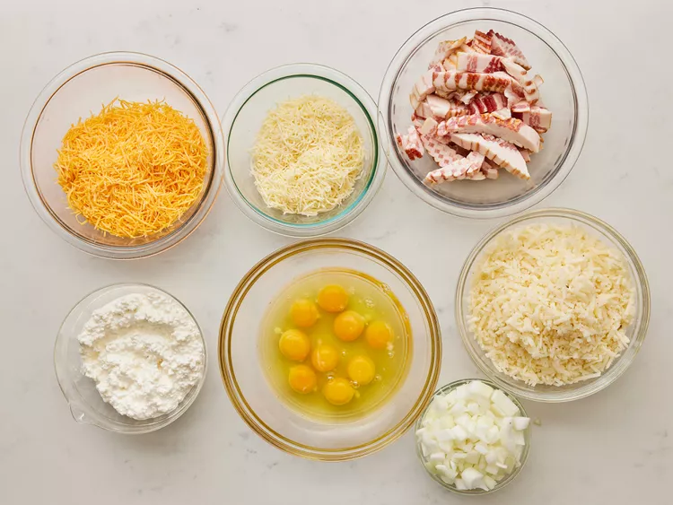
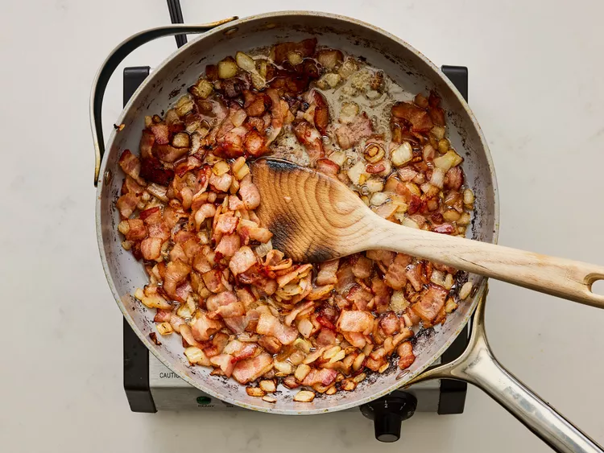
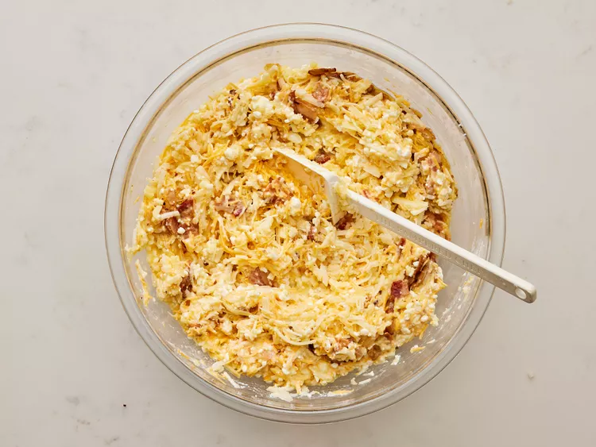
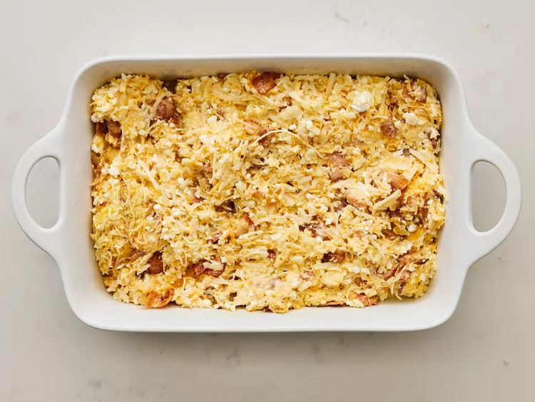
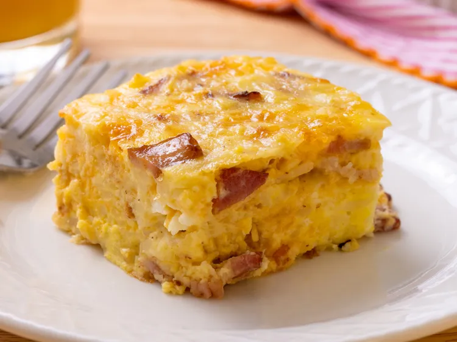

Cheesy Amish Breakfast Casserole
Description
The perfect one pan breakfast with everything you love in each and every
bite!
Ingredients
- Bacon
- Onion
- Eggs
- Hash browns
- Cheese: Cheddar, cottage and Swiss
Steps
- Gather all ingredients. Preheat the oven to 350F (175C). Grease
a 9x13in baking dish.

- Heat a large skillet over medium-high heat; cook and stir bacon and
onion until bacon is evenly browned, about 10min. Drain

- Transfer bacon and onion to a large bowl. Stir in eggs, potatoes,
Cheddar cheese, cottage cheese, and Swish cheese.

- Pour mixture into the prepared baking dish.

- Bake in the preheated oven until eggs are set and cheese is melted,
45 to 50min. Let stand 10min before cutting and serving.

Home